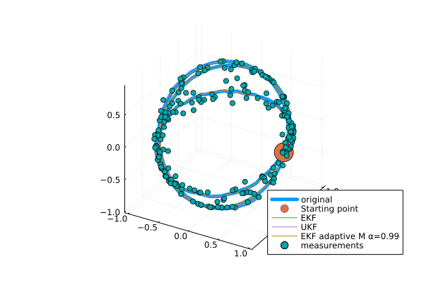

GeometricKalman
Kalman filters on manifolds with an affine connection, unifying the Lie group and Riemannian approaches.

arXiv preprint: https://arxiv.org/abs/2506.01086
Getting started
Basic setting (example: a car driving on a sphere)
using Manifolds
using RecursiveArrayTools
using LinearAlgebra
using Distributions
using GeometricKalman
using GeometricKalman: gen_car_sphere_data, car_sphere_f, car_sphere_h
M = TangentBundle(Manifolds.Sphere(2)) # state manifold
M_obs = Manifolds.Sphere(2) # observation manifold
retraction = Manifolds.FiberBundleProductRetraction()
inverse_retraction = Manifolds.FiberBundleInverseProductRetraction()Manifolds.FiberBundleInverseProductRetraction()Generating data using the gen_car_sphere_data function.
dt = 0.01
vt = 5
times, samples, controls, measurements = gen_car_sphere_data(;
vt = vt,
N = 200,
noise_f_distr = MvNormal(
[0.0, 0.0, 0.0, 0.0],
1e4 * diagm([1e-3, 1e-3, 1e-2, 1e-2]),
),
noise_h_distr = MvNormal([0.0, 0.0], diagm([0.01, 0.01])),
retraction = retraction,
)([0.0, 0.01, 0.02, 0.03, 0.04, 0.05, 0.06, 0.07, 0.08, 0.09 … 1.91, 1.92, 1.93, 1.94, 1.95, 1.96, 1.97, 1.98, 1.99, 2.0], RecursiveArrayTools.ArrayPartition{Float64, Tuple{Vector{Float64}, Vector{Float64}}}[RecursiveArrayTools.ArrayPartition{Float64, Tuple{Vector{Float64}, Vector{Float64}}}(([1.0, 0.0, 0.0], [0.0, 1.0, 0.0])), RecursiveArrayTools.ArrayPartition{Float64, Tuple{Vector{Float64}, Vector{Float64}}}(([0.9984929130658056, 0.04435228551912633, -0.03232301543160045], [-0.04424506169185705, 0.9941418552075808, -0.002658079008125836])), RecursiveArrayTools.ArrayPartition{Float64, Tuple{Vector{Float64}, Vector{Float64}}}(([0.9942485910921581, 0.09782445318467273, -0.04359031395136054], [-0.09776336448743, 0.9945877824123563, 0.0021545739884644703])), RecursiveArrayTools.ArrayPartition{Float64, Tuple{Vector{Float64}, Vector{Float64}}}(([0.9912605864218319, 0.12138027438868654, -0.05166506359207168], [-0.12044298003361686, 0.9868762421553334, 0.007682755316207549])), RecursiveArrayTools.ArrayPartition{Float64, Tuple{Vector{Float64}, Vector{Float64}}}(([0.9833946357698242, 0.1742876324407689, -0.05058469647359563], [-0.17192837257999705, 0.9733976000440593, 0.011420920627690363])), RecursiveArrayTools.ArrayPartition{Float64, Tuple{Vector{Float64}, Vector{Float64}}}(([0.9745539117703083, 0.21980555513751013, -0.043933938861440244], [-0.216843534124238, 0.9644858628033919, 0.01533293145033134])), RecursiveArrayTools.ArrayPartition{Float64, Tuple{Vector{Float64}, Vector{Float64}}}(([0.9605793542118702, 0.27316994999042604, -0.051628312815101364], [-0.2681780513415429, 0.948296412011023, 0.02788749031661948])), RecursiveArrayTools.ArrayPartition{Float64, Tuple{Vector{Float64}, Vector{Float64}}}(([0.9456417265880541, 0.3214681363957708, -0.04919311148721616], [-0.3145945298722712, 0.9300669052997201, 0.030353037678847374])), RecursiveArrayTools.ArrayPartition{Float64, Tuple{Vector{Float64}, Vector{Float64}}}(([0.9336669702526034, 0.3548334508074176, -0.04857170830250761], [-0.34888161495853776, 0.9224406556397093, 0.03239664910942341])), RecursiveArrayTools.ArrayPartition{Float64, Tuple{Vector{Float64}, Vector{Float64}}}(([0.9137076121823717, 0.40463855955954786, -0.03749714065848801], [-0.4000827184611118, 0.907217336363933, 0.04097621328545939])) … RecursiveArrayTools.ArrayPartition{Float64, Tuple{Vector{Float64}, Vector{Float64}}}(([-0.7995553160639695, -0.348314238953767, -0.48927342815230046], [2.187138838365386, -1.1275692526320047, -2.771436135838432])), RecursiveArrayTools.ArrayPartition{Float64, Tuple{Vector{Float64}, Vector{Float64}}}(([-0.6718126917345425, -0.4040299913551043, -0.6208280545448823], [2.735574163886697, -0.8567229250429087, -2.402680863987193])), RecursiveArrayTools.ArrayPartition{Float64, Tuple{Vector{Float64}, Vector{Float64}}}(([-0.5230017388518804, -0.44188366507983307, -0.7288401798018025], [3.188274685067357, -0.5547079815641811, -1.9515345719164818])), RecursiveArrayTools.ArrayPartition{Float64, Tuple{Vector{Float64}, Vector{Float64}}}(([-0.3481372937429531, -0.4817976758018975, -0.804158830267518], [3.5420331079452128, -0.21380758174024445, -1.405321662911747])), RecursiveArrayTools.ArrayPartition{Float64, Tuple{Vector{Float64}, Vector{Float64}}}(([-0.16962077815261212, -0.488229265275788, -0.8560729969734865], [3.7608426119648697, 0.13529619432370346, -0.8223277855849228])), RecursiveArrayTools.ArrayPartition{Float64, Tuple{Vector{Float64}, Vector{Float64}}}(([0.019914317914723867, -0.45492810619559193, -0.8903054746182817], [3.851618406526974, 0.4932915192220044, -0.16590914851058636])), RecursiveArrayTools.ArrayPartition{Float64, Tuple{Vector{Float64}, Vector{Float64}}}(([0.22336566578926514, -0.423025053751958, -0.8781557852936298], [3.7895078847843724, 0.8504164946674533, 0.5542279359550565])), RecursiveArrayTools.ArrayPartition{Float64, Tuple{Vector{Float64}, Vector{Float64}}}(([0.4019565144674486, -0.37052751580148524, -0.8373412210748735], [3.586554117100387, 1.1498530527279147, 1.212870656708908])), RecursiveArrayTools.ArrayPartition{Float64, Tuple{Vector{Float64}, Vector{Float64}}}(([0.5753082462535627, -0.2897289730309915, -0.7649036174440917], [3.218680800867359, 1.4175521353677107, 1.8839336741721773])), RecursiveArrayTools.ArrayPartition{Float64, Tuple{Vector{Float64}, Vector{Float64}}}(([0.7292544239846648, -0.2232440091461011, -0.6467998898261894], [2.710832092972612, 1.6303106821891236, 2.4937066765235585]))], Any[0.0, 0.004999979166692708, 0.009999833334166664, 0.01499943750632809, 0.01999866669333308, 0.024997395914712332, 0.02999550020249566, 0.034992854604336196, 0.03998933418663416, 0.044984814037660234 … 0.8163137404456835, 0.8191915683009983, 0.8220489164097717, 0.8248857133384501, 0.8277018881672576, 0.8304973704919705, 0.8332720904256761, 0.8360259786005205, 0.838758966169443, 0.8414709848078965], [[0.9994591084981027, -0.022125951163551504, 0.024329667595053225], [0.9972050980203391, 0.0634332836110548, -0.03947418159462659], [0.9954537115106027, 0.07823740922448624, -0.05432141417163114], [0.9809769470084183, 0.18868197752560747, -0.045643628197906044], [0.9899869999987257, 0.09718763728081188, -0.10237335099182696], [0.9788950703668853, 0.15054356437274374, 0.13820664396967228], [0.9668166675055122, 0.25208880407283885, -0.04143387858578046], [0.9351635057684282, 0.3540790326635576, 0.009861851091036301], [0.9467303449726218, 0.32195496178839617, -0.006830555457100394], [0.897700793747027, 0.440227335365806, -0.018253166921919375] … [-0.8407303756616541, -0.512101159257936, -0.17585459370312906], [-0.7617228193538104, -0.2722579566848745, -0.5879234231576931], [-0.5679219717420797, -0.41749347065990344, -0.7093404231882864], [-0.3280140652381516, -0.6442420160168073, -0.6909117149133757], [-0.008434493614189853, -0.6196771475265813, -0.7848115010311661], [0.11527328956202304, -0.5731176462495651, -0.8113249856074375], [0.07458222861926239, -0.29394319041936867, -0.9529086482870576], [0.43141584045711706, -0.48294336255102105, -0.7620013655962781], [0.6166950470819331, -0.3604707946945853, -0.6998199947678452], [0.8868623311753359, -0.10518530444674257, -0.4499013861622294]])Setting initial conditions for filters
p0 = ArrayPartition([1.0, 0.0, 0.0], [0.0, 1.0, 0.0])
P0 = diagm([0.1, 0.1, 0.1, 0.1])
Q = diagm([0.1, 0.1, 0.01, 0.01])
R = diagm([0.01, 0.01])2×2 Matrix{Float64}:
0.01 0.0
0.0 0.01Adapting system dynamics to the interface expected by Kalman filters.
car_f_adapted(p, q, noise, t::Real) = car_sphere_f(p, q, noise, t::Real; vt = vt)
f_tilde = GeometricKalman.default_discretization(
M,
car_f_adapted;
dt = dt,
retraction = retraction,
)(::GeometricKalman.var"#tilde_f#27"{Float64, Manifolds.FiberBundleProductRetraction, FiberBundle{ℝ, TangentSpaceType, Sphere{ManifoldsBase.TypeParameter{Tuple{2}}, ℝ}, Manifolds.FiberBundleProductVectorTransport{ParallelTransport, ParallelTransport}}, typeof(Main.car_f_adapted)}) (generic function with 1 method)Filter-specific settings
sp = WanMerweSigmaPoints(; α = 1.0)
filter_params = [
( # extended Kalman filter
"EKF",
(;
propagator = EKFPropagator(M, f_tilde; B_M = DefaultOrthonormalBasis()),
updater = EKFUpdater(
M,
M_obs,
car_sphere_h;
B_M = DefaultOrthonormalBasis(),
B_M_obs = DefaultOrthonormalBasis(),
),
),
),
( # unscented Kalman filter
"UKF",
(;
propagator = UnscentedPropagator(
M;
sigma_points = sp,
inverse_retraction_method = inverse_retraction,
),
updater = UnscentedUpdater(; sigma_points = sp),
),
),
( # adaptive extended Kalman filter
"EKF adaptive M α=0.99",
(;
propagator = EKFPropagator(M, f_tilde; B_M = DefaultOrthonormalBasis()),
updater = EKFUpdater(
M,
M_obs,
car_sphere_h;
B_M = DefaultOrthonormalBasis(),
B_M_obs = DefaultOrthonormalBasis(),
),
measurement_covariance_adapter = CovarianceMatchingMeasurementCovarianceAdapter(
0.99,
),
),
),
]3-element Vector{Tuple{String, NamedTuple}}:
("EKF", (propagator = EKFPropagator{GeometricKalman.var"#jacobian_p#3"{DefaultOrthonormalBasis{ℝ, TangentSpaceType}, DefaultOrthonormalBasis{ℝ, TangentSpaceType}, Manifolds.FiberBundleProductRetraction, Manifolds.FiberBundleInverseProductRetraction, FiberBundle{ℝ, TangentSpaceType, Sphere{ManifoldsBase.TypeParameter{Tuple{2}}, ℝ}, Manifolds.FiberBundleProductVectorTransport{ParallelTransport, ParallelTransport}}, FiberBundle{ℝ, TangentSpaceType, Sphere{ManifoldsBase.TypeParameter{Tuple{2}}, ℝ}, Manifolds.FiberBundleProductVectorTransport{ParallelTransport, ParallelTransport}}, GeometricKalman.var"#tilde_f#27"{Float64, Manifolds.FiberBundleProductRetraction, FiberBundle{ℝ, TangentSpaceType, Sphere{ManifoldsBase.TypeParameter{Tuple{2}}, ℝ}, Manifolds.FiberBundleProductVectorTransport{ParallelTransport, ParallelTransport}}, typeof(Main.car_f_adapted)}}}(GeometricKalman.var"#jacobian_p#3"{DefaultOrthonormalBasis{ℝ, TangentSpaceType}, DefaultOrthonormalBasis{ℝ, TangentSpaceType}, Manifolds.FiberBundleProductRetraction, Manifolds.FiberBundleInverseProductRetraction, FiberBundle{ℝ, TangentSpaceType, Sphere{ManifoldsBase.TypeParameter{Tuple{2}}, ℝ}, Manifolds.FiberBundleProductVectorTransport{ParallelTransport, ParallelTransport}}, FiberBundle{ℝ, TangentSpaceType, Sphere{ManifoldsBase.TypeParameter{Tuple{2}}, ℝ}, Manifolds.FiberBundleProductVectorTransport{ParallelTransport, ParallelTransport}}, GeometricKalman.var"#tilde_f#27"{Float64, Manifolds.FiberBundleProductRetraction, FiberBundle{ℝ, TangentSpaceType, Sphere{ManifoldsBase.TypeParameter{Tuple{2}}, ℝ}, Manifolds.FiberBundleProductVectorTransport{ParallelTransport, ParallelTransport}}, typeof(Main.car_f_adapted)}}(DefaultOrthonormalBasis(ℝ), DefaultOrthonormalBasis(ℝ), Manifolds.FiberBundleProductRetraction(), Manifolds.FiberBundleInverseProductRetraction(), TangentBundle(Sphere(2, ℝ)), TangentBundle(Sphere(2, ℝ)), GeometricKalman.var"#tilde_f#27"{Float64, Manifolds.FiberBundleProductRetraction, FiberBundle{ℝ, TangentSpaceType, Sphere{ManifoldsBase.TypeParameter{Tuple{2}}, ℝ}, Manifolds.FiberBundleProductVectorTransport{ParallelTransport, ParallelTransport}}, typeof(Main.car_f_adapted)}(0.01, Manifolds.FiberBundleProductRetraction(), TangentBundle(Sphere(2, ℝ)), Main.car_f_adapted))), updater = EKFUpdater{GeometricKalman.var"#jacobian_p#3"{DefaultOrthonormalBasis{ℝ, TangentSpaceType}, DefaultOrthonormalBasis{ℝ, TangentSpaceType}, Manifolds.FiberBundleProductRetraction, LogarithmicInverseRetraction, FiberBundle{ℝ, TangentSpaceType, Sphere{ManifoldsBase.TypeParameter{Tuple{2}}, ℝ}, Manifolds.FiberBundleProductVectorTransport{ParallelTransport, ParallelTransport}}, Sphere{ManifoldsBase.TypeParameter{Tuple{2}}, ℝ}, typeof(GeometricKalman.car_sphere_h)}}(GeometricKalman.var"#jacobian_p#3"{DefaultOrthonormalBasis{ℝ, TangentSpaceType}, DefaultOrthonormalBasis{ℝ, TangentSpaceType}, Manifolds.FiberBundleProductRetraction, LogarithmicInverseRetraction, FiberBundle{ℝ, TangentSpaceType, Sphere{ManifoldsBase.TypeParameter{Tuple{2}}, ℝ}, Manifolds.FiberBundleProductVectorTransport{ParallelTransport, ParallelTransport}}, Sphere{ManifoldsBase.TypeParameter{Tuple{2}}, ℝ}, typeof(GeometricKalman.car_sphere_h)}(DefaultOrthonormalBasis(ℝ), DefaultOrthonormalBasis(ℝ), Manifolds.FiberBundleProductRetraction(), LogarithmicInverseRetraction(), TangentBundle(Sphere(2, ℝ)), Sphere(2, ℝ), GeometricKalman.car_sphere_h))))
("UKF", (propagator = UnscentedPropagator{WanMerweSigmaPoints{Float64}, Manifolds.FiberBundleInverseProductRetraction, GradientDescentEstimation}(WanMerweSigmaPoints{Float64}(1.0, 2.0, 0.0), Manifolds.FiberBundleInverseProductRetraction(), GradientDescentEstimation()), updater = UnscentedUpdater{WanMerweSigmaPoints{Float64}, LogarithmicInverseRetraction}(WanMerweSigmaPoints{Float64}(1.0, 2.0, 0.0), LogarithmicInverseRetraction())))
("EKF adaptive M α=0.99", (propagator = EKFPropagator{GeometricKalman.var"#jacobian_p#3"{DefaultOrthonormalBasis{ℝ, TangentSpaceType}, DefaultOrthonormalBasis{ℝ, TangentSpaceType}, Manifolds.FiberBundleProductRetraction, Manifolds.FiberBundleInverseProductRetraction, FiberBundle{ℝ, TangentSpaceType, Sphere{ManifoldsBase.TypeParameter{Tuple{2}}, ℝ}, Manifolds.FiberBundleProductVectorTransport{ParallelTransport, ParallelTransport}}, FiberBundle{ℝ, TangentSpaceType, Sphere{ManifoldsBase.TypeParameter{Tuple{2}}, ℝ}, Manifolds.FiberBundleProductVectorTransport{ParallelTransport, ParallelTransport}}, GeometricKalman.var"#tilde_f#27"{Float64, Manifolds.FiberBundleProductRetraction, FiberBundle{ℝ, TangentSpaceType, Sphere{ManifoldsBase.TypeParameter{Tuple{2}}, ℝ}, Manifolds.FiberBundleProductVectorTransport{ParallelTransport, ParallelTransport}}, typeof(Main.car_f_adapted)}}}(GeometricKalman.var"#jacobian_p#3"{DefaultOrthonormalBasis{ℝ, TangentSpaceType}, DefaultOrthonormalBasis{ℝ, TangentSpaceType}, Manifolds.FiberBundleProductRetraction, Manifolds.FiberBundleInverseProductRetraction, FiberBundle{ℝ, TangentSpaceType, Sphere{ManifoldsBase.TypeParameter{Tuple{2}}, ℝ}, Manifolds.FiberBundleProductVectorTransport{ParallelTransport, ParallelTransport}}, FiberBundle{ℝ, TangentSpaceType, Sphere{ManifoldsBase.TypeParameter{Tuple{2}}, ℝ}, Manifolds.FiberBundleProductVectorTransport{ParallelTransport, ParallelTransport}}, GeometricKalman.var"#tilde_f#27"{Float64, Manifolds.FiberBundleProductRetraction, FiberBundle{ℝ, TangentSpaceType, Sphere{ManifoldsBase.TypeParameter{Tuple{2}}, ℝ}, Manifolds.FiberBundleProductVectorTransport{ParallelTransport, ParallelTransport}}, typeof(Main.car_f_adapted)}}(DefaultOrthonormalBasis(ℝ), DefaultOrthonormalBasis(ℝ), Manifolds.FiberBundleProductRetraction(), Manifolds.FiberBundleInverseProductRetraction(), TangentBundle(Sphere(2, ℝ)), TangentBundle(Sphere(2, ℝ)), GeometricKalman.var"#tilde_f#27"{Float64, Manifolds.FiberBundleProductRetraction, FiberBundle{ℝ, TangentSpaceType, Sphere{ManifoldsBase.TypeParameter{Tuple{2}}, ℝ}, Manifolds.FiberBundleProductVectorTransport{ParallelTransport, ParallelTransport}}, typeof(Main.car_f_adapted)}(0.01, Manifolds.FiberBundleProductRetraction(), TangentBundle(Sphere(2, ℝ)), Main.car_f_adapted))), updater = EKFUpdater{GeometricKalman.var"#jacobian_p#3"{DefaultOrthonormalBasis{ℝ, TangentSpaceType}, DefaultOrthonormalBasis{ℝ, TangentSpaceType}, Manifolds.FiberBundleProductRetraction, LogarithmicInverseRetraction, FiberBundle{ℝ, TangentSpaceType, Sphere{ManifoldsBase.TypeParameter{Tuple{2}}, ℝ}, Manifolds.FiberBundleProductVectorTransport{ParallelTransport, ParallelTransport}}, Sphere{ManifoldsBase.TypeParameter{Tuple{2}}, ℝ}, typeof(GeometricKalman.car_sphere_h)}}(GeometricKalman.var"#jacobian_p#3"{DefaultOrthonormalBasis{ℝ, TangentSpaceType}, DefaultOrthonormalBasis{ℝ, TangentSpaceType}, Manifolds.FiberBundleProductRetraction, LogarithmicInverseRetraction, FiberBundle{ℝ, TangentSpaceType, Sphere{ManifoldsBase.TypeParameter{Tuple{2}}, ℝ}, Manifolds.FiberBundleProductVectorTransport{ParallelTransport, ParallelTransport}}, Sphere{ManifoldsBase.TypeParameter{Tuple{2}}, ℝ}, typeof(GeometricKalman.car_sphere_h)}(DefaultOrthonormalBasis(ℝ), DefaultOrthonormalBasis(ℝ), Manifolds.FiberBundleProductRetraction(), LogarithmicInverseRetraction(), TangentBundle(Sphere(2, ℝ)), Sphere(2, ℝ), GeometricKalman.car_sphere_h)), measurement_covariance_adapter = CovarianceMatchingMeasurementCovarianceAdapter{Float64}(0.99)))Running the filters. Results will be saved in reconstructions.
reconstructions = NamedTuple[]
for (name, filter_kwargs) in filter_params
kf = discrete_kalman_filter_manifold(
M,
M_obs,
p0,
f_tilde,
car_sphere_h,
P0,
copy(Q),
copy(R);
filter_kwargs...,
)
samples_kalman = []
for i in eachindex(samples)
GeometricKalman.update!(kf, controls[i], measurements[i])
push!(samples_kalman, kf.p_n)
predict!(kf, controls[i])
end
push!(reconstructions, (; data = samples_kalman, label = name))
end┌ Warning: SpecialOrthogonal will move to LieGroups.jl and be renamed to SpecialOrthogonalGroup.
│ caller = ip:0x0
└ @ Core :-1Plotting the estimated trajectory and measurements.
using Plots
function trajectory_plot3d(
p0,
samples::Vector,
reconstructions::Vector{<:NamedTuple},
measurements::Vector,
)
fig = plot(
[s.x[1][1] for s in samples],
[s.x[1][2] for s in samples],
[s.x[1][3] for s in samples];
label = "original",
linewidth = 5.0,
)
scatter3d!(map(v -> [v], p0.x[1])..., markersize = 15, label = "Starting point")
for rec in reconstructions
plot!(
[s.x[1][1] for s in rec.data],
[s.x[1][2] for s in rec.data],
[s.x[1][3] for s in rec.data];
label = rec.label,
)
end
scatter!(
[s[1] for s in measurements],
[s[2] for s in measurements],
[s[3] for s in measurements];
label = "measurements",
)
return fig
end
trajectory_plot3d(p0, samples, reconstructions, measurements)